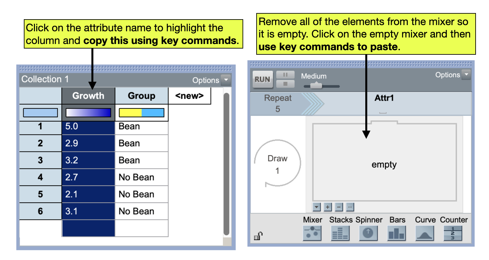

| Bean | No Bean |
|---|---|
| 5.0 | 2.7 |
| 2.9 | 2.1 |
| 3.2 | 3.1 |
TinkerPlots 101: Data Structure For Comparing Groups
The data for comparing groups may be presented in a variety of ways, depending on how it was collected and recorded. For example, one common structure that group data is recorded is the data for each group is recorded in a seperate column.
While this structure for the data may be useful for recording the data, it is not the structure we need when we use statistical software (including TinkerPlots) to analyze the data. Most software requires that we have all of the response data for both groups in a single column. Then a second column indicates the group associated with these responses.
| Response | Group |
|---|---|
| 5.0 | Bean |
| 2.9 | Bean |
| 3.2 | Bean |
| 2.7 | No Bean |
| 2.1 | No Bean |
| 3.1 | No Bean |
Adding Data to the Sampling Device
Aside from needing the data in this structure to create a plot that allows us to compare the groups and obtain the group means in TinkerPlots, there is one other big advantage to this structure. When we create our sampler for the randomization test, since all of the response data is in a single column in the case table, we can copy the entire attribute and paste the results into our mixer (rather than having to record each data point on a mixer element one-at-a-time).
To do this, after your data are entered into a case table in the appropriate structure, click on the attribute name to highlight the column with the response values. Then use key commands to copy the attribute. (On a Mac the key command for copy is Command-C, and on a PC it is Control-C.) Then in the mixer, use the remove elements icon (the - below the sampling device) to remove all of the elements in the mixer until it is empty. Click on the empty mixer and then use key commands to paste the response values into the mixer. (On a Mac the key command for paste is Command-V, and on a PC it is Control-V.)

FYI
It is easiest to enter the group data in the stacks device manually.